Next: *COUPLED TEMPERATURE-DISPLACEMENT
Up: Input deck format
Previous: *CONTACT PRINT
Contents
*CONTROLS
Keyword type: step
This option is used to change the iteration control parameters. It
should only be used by those users who know what they are doing and
are expert in the field. A detailed description of the convergence criteria is
given in Section 6.10. There are two, mutually exclusive
parameter: PARAMETERS and
RESET. The RESET parameter resets the control parameters to their
defaults. The parameter PARAMETERS is used to change the
defaults. It can take the value TIME INCREMENTATION, FIELD, LINE SEARCH,
NETWORK, CFD or CONTACT. If the TIME INCREMENTATION value is
selected, the number of iterations before certain actions are taken
(e.g. the number of divergent iterations before the increment is
reattempted) can be changed and effect of these actions (e.g. the
increment size is divided by two). The FIELD parameter can be used to
change the convergence criteria themselves.
LINE SEARCH
can be used to change the line search parameters (only for face-to-face
penalty contact). The line search parameter scales the correction to the
solution calculated by the Newton-Raphson algorithm such that the residual
force is orthogonal to the correction. This requires the solution of a
nonlinear equation, and consequently an iterative procedure. In CalculiX this
procedure is approximated by a linear connection between:
- the scalar product of the residual force from the last iteration with
the solution correction in the present iteration (corresponds to a line
search parameter of zero) and
- the scalar product of the residual force in the present iteration with
the solution correction in the present iteration (corresponds to a line
search parameter of one).
For details of the line seach algorithm the reader is referred to [84].
With the NETWORK parameter the convergence criteria for network
iterations can be changed. The parameters  , 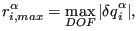 and 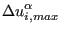
express the fraction of the mean energy balance, mass balance and element
balance terms the energy balance residual, the mass balance residual and the
element balance residual is not allowed to exceed, respectively. The parameters 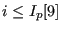,
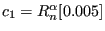, 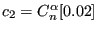 and
, 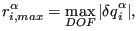 and 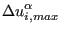
express the fraction of the mean energy balance, mass balance and element
balance terms the energy balance residual, the mass balance residual and the
element balance residual is not allowed to exceed, respectively. The parameters 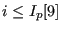,
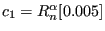, 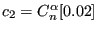 and  is the fraction of the change in temperature,
mass flow, pressure and geometry since the beginning of the increment the
temperature, mass flow, pressure and geometry change in the actual network
iteration is not allowed to exceed, respectively.
is the fraction of the change in temperature,
mass flow, pressure and geometry since the beginning of the increment the
temperature, mass flow, pressure and geometry change in the actual network
iteration is not allowed to exceed, respectively.
With the CFD parameter the maximum number of iterations in certain
fluid loops can be influenced. A fluid calculation within CalculiX is
triggered at the start of a new mechanical increment. This increment is
subdivided into fluid increments based on the physical fluid properties. For
each fluid increment iterations are performed. In steady state calculations
only one iteration is performed, since no time-accurate solution is
needed. In transient calculations iterations are performed until convergence
of the fluid increment or until the maximum allowed number of iterations is
reached. This is the first parameter 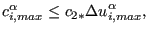 (``transient''). In fluid
calculations the unknowns in the equation systems are the quantities
(velocity..) at the element centers. The values at the face centers and the
gradients are calculated based on these element center quantities. In case the
mesh is not orthogonal, iterations have to be performed. The number of these
iterations is expressed by 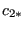 (``geometry'') and  (taking
non-orthogonality into account in the pressure correction equation,
``pressure''). This is the second and third parameter. For a perfectly
rectangular grid these values can be set to zero.
(taking
non-orthogonality into account in the pressure correction equation,
``pressure''). This is the second and third parameter. For a perfectly
rectangular grid these values can be set to zero.
Finally, the CONTACT parameter is used to change defaults in the face-to-face
penalty contact
convergence algorithm (cf. Section 6.10.2). This relates to
- the maximum relative difference in number of contact elements to allow for
convergence (delcon). The corresponding absolute difference, which may not be
exceeded is defined as the number of contact elements in the previous
iteration times delcon.
- the fraction of contact elements which is removed in an
aleatoric way before repeting an increment in case of a local mimimum in the
solution (alea)
- the integer factor by which the normal spring stiffness (in
case of linear pressure-overclosure) and stick slope are reduced in case of
divergence or too slow convergence (kscalemax)
- the maximum number of iterions per
increment (itf2f).
First line:
- *CONTROLS
- Enter the PARAMETERS parameter and its value, or the RESET parameter.
There are no subsequent lines if the parameter RESET is selected.
Following lines if PARAMETERS=TIME INCREMENTATION is selected:
Second line:
- 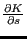 iteration after which a check is made whether the
residuals increase in two consecutive iterations (default: 4). If so,
the increment is reattempted with
 times its size.
times its size.
- 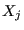 iteration after which a logarithmic convergence check is
performed in each iteration (default: 8). If more than
 iterations are needed, the increment is reattempted with
iterations are needed, the increment is reattempted with  its size.
its size.
 iteration after which the residual tolerance
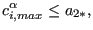 is used
instead of
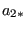 (default: 9).
iteration after which the residual tolerance
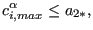 is used
instead of
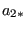 (default: 9).
- maximum number of iterations allowed (default: 16).
 number of iterations after which the size of the
subsequent increment will be reduced (default: 10).
number of iterations after which the size of the
subsequent increment will be reduced (default: 10).
 maximum number of iterations allowed in two consecutive
increments for the size of the next increment to be increased
(default: 4).
maximum number of iterations allowed in two consecutive
increments for the size of the next increment to be increased
(default: 4).
- 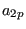 Currently not used.
 Maximum number of cutbacks per increment (default: 5). A
cutback is a reattempted increment.
Maximum number of cutbacks per increment (default: 5). A
cutback is a reattempted increment.
- 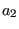 Currently not used.
 Currently not used.
Currently not used.
Third line:
- Cutback factor if the solution seems to diverge(default: 0.25).
- Cutback factor if the logarithmic extrapolation predicts
too many iterations (default: 0.5).
 Cutback factor for the next increment if more than
iterations were needed in the current increment (default: 0.75).
Cutback factor for the next increment if more than
iterations were needed in the current increment (default: 0.75).
 Cutback factor if the temperature change in two subsequent
increments exceeds DELTMX (default: 0.85).
Cutback factor if the temperature change in two subsequent
increments exceeds DELTMX (default: 0.85).
- 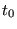 Currently not used.
 Currently not used.
Currently not used.
- 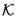 Factor by which the next increment will be increased if
less than iterations are needed in two consecutive increments (default: 1.5).
 Currently not used.
Currently not used.
Following line if PARAMETERS=FIELD is selected:
Second line:
-
 Convergence criterion for the ratio of the largest
residual to the average force (default: 0.005). The average force is
defined as the average over all increments in the present step of the
instantaneous force. The instantaneous force in an increment is
defined as the mean of the absolute value of the nodal force
components within all elements.
Convergence criterion for the ratio of the largest
residual to the average force (default: 0.005). The average force is
defined as the average over all increments in the present step of the
instantaneous force. The instantaneous force in an increment is
defined as the mean of the absolute value of the nodal force
components within all elements.
-
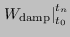 Convergence criterion for the ratio of the largest
solution correction to the largest incremental solution value (default: 0.01).
-
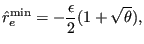 Initial value at the start of a new step of the
time average force (default:
the time average force from the previous steps or 0.01 for the first step).
-
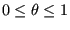 user-defined average force. If defined, the
calculation of the average force is replaced by this value.
-
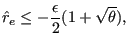 Alternative residual convergence criterion to be
used after iterations instead of
(default: 0.02).
-
 Criterion for zero flux relative to
Criterion for zero flux relative to
 (default:
(default:  ).
).
-
 Convergence criterion for the ratio of the
largest solution correction to the largest incremental solution value
in case of zero flux (default:
Convergence criterion for the ratio of the
largest solution correction to the largest incremental solution value
in case of zero flux (default:  ).
).
-
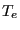 Convergence criterion for the ratio of the largest
residual to the average force for convergence in a single iteration (default:
 ).
).
Following line if PARAMETERS=LINE SEARCH is selected:
Second line:
- not used.
-
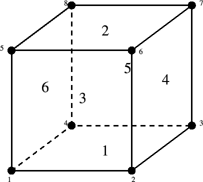 Maximum value of the line search parameter (default: 1.01).
-
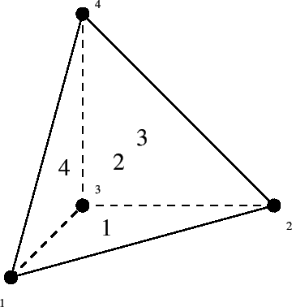 Minimum value of the line search parameter (default: 0.25).
- not used.
- not used.
Following line if PARAMETERS=NETWORK is selected:
Second line:
- (default:
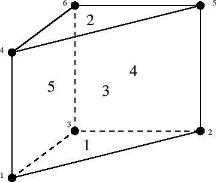).
- (default:
).
- (default:
).
- (default:
).
- (default:
).
- (default:
).
- (default:
).
Third line:
 (default:
(default:  ).
).
 (default: ).
(default: ).
- 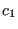 (default: ).
 (default: ).
(default: ).
 (default: ).
(default: ).
 (default: ).
(default: ).
- 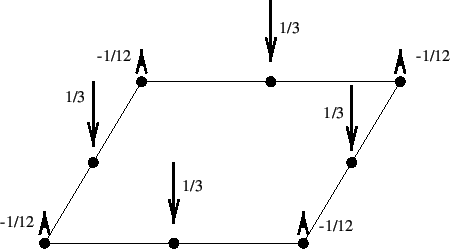 (default: ).
Following line if PARAMETERS=CFD is selected:
Second line:
- (default: 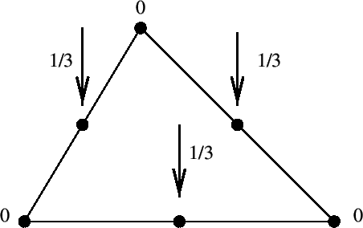).
- (default:
 ).
).
- (default: ).
Following line if PARAMETERS=CONTACT is selected:
Second line:
- delcon (
 ; default: 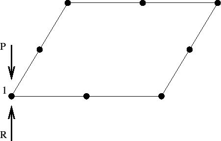).
; default: 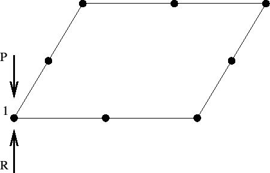).
- alea (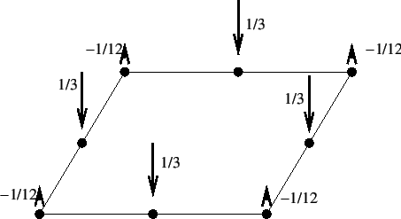 alea 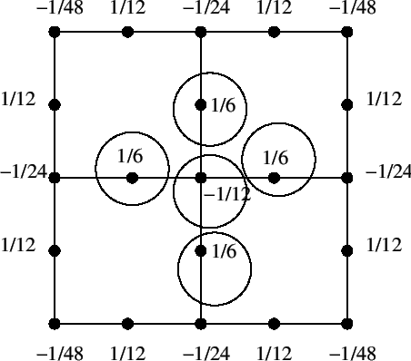; default: 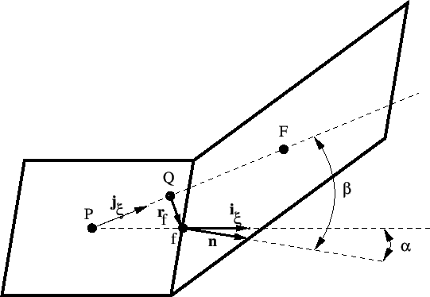).
- kscalemax (
 , integer; default: 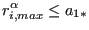).
, integer; default: 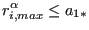).
- itf2f (, integer; default:
 ).
).
Example:
*CONTROLS,PARAMETERS=FIELD
1.e30,1.e30,0.01,,0.02,1.e-5,1.e-3,1.e-8
leads to convergence in just one iteration since nearly any residuals
are accepted for convergence (
 and
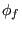.
and
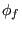.
Example files: beammrco.
Next: *COUPLED TEMPERATURE-DISPLACEMENT
Up: Input deck format
Previous: *CONTACT PRINT
Contents
guido dhondt
2018-12-15